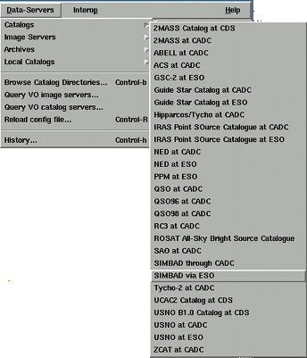

If your image has a world coordinate system associated with it, you can query the ESO catalogue of HST guide stars about any located within the bounds of your image. These will then be listed and plotted over your image. Similarly you can query the NED (NASA/IPAC Extragalactic Database) and SIMBAD databases and see lists of all the objects that they know about on your image. To see the full list of available SkyCat-format catalogues, look at the "Browse Catalog Directories..." item in the "Data-Servers" menu.

Just for reference the catalogues shown in the "Catalogs" sub-menu are only a default set loaded from a local configuration file (you can add entries to this list using the "Add" button). Entries in the list that are shown as type "directory", should be expanded by pressing the associated plus sign (the names in this lists are returned from the remote server).
You can also display an image returned directly from the Digital Sky Survey (and then perform queries in other catalogues about this field). Named objects from certain catalogues can have their full information displayed in a web browser and may even have bibliography links to the ADS abstract service. Finally the HST archives are also available. Using these you can see what observations have been made of any objects on your image (and preview any generally available).
Usage hints for the windows that actually display the catalogues are available:
It also has facilities for obtaining images (from the DSS) and for finding out about any previous observations made by HST, NNT and the CFHT.
Remote catalogues are obtained from specially configured data-centres. Typically these data-centres return object coordinates (as Right Ascension and Declination) together with other useful information, such as magnitudes and possibly links to bibliographic (ADS) and archive (HST, NNT and CFHT) details.
The main services used by GAIA and Skycat are provided by ESO, CADC and LEDAS.
To see a list of all the catalogues available select the "Browse Catalog Directories..." item in the "Data-Servers" menu. This should reveal a window containing a directory-like listing of all the catalogues. Those marked with type "directory" may be expanded to show their full contents by pressing the plus sign against their names.
The catalogues shown outside of the site directory listings are the default set and are those shown in the "Catalogs" sub-menus of the "Data-Servers" menu.
Queries for images of a region of sky can be made by selecting the "Image Servers" item and queries of existing observations of a region of sky by the "Archives" items.